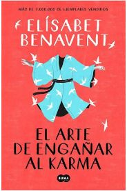

Taylor Jenkins Reid
Escritora de ficción y ensayista, Taylor Jenkins Reid nació en Acton, Massachusetts. Se licenció en Ciencias de la Información en el Emerson College. Trabajó en la producción cinematográfica como asistente de casting durante tres años, puesto que le sirvió de ayuda en la construcción de los personajes de sus novelas. Comenzó a escribir mientras ejercía como profesora y en 2013 Jenkins Reid consiguió publicar su primera novela Forever, Interrupted. Su obra Todos quieren a Daisy Jones alcanzó la lista de bestsellers del New York Times y se espera la realización de una adaptación en formato de miniserie producida por la actriz Reese Witherspoon. Su libro publicado en 2017, Los siete maridos de Evelyn Hugo también obtuvo el favor de la crítica y el público.
Recomendaciones de lectura

Los siete maridos de Evelyn Hugo
Taylor Jenkins Reid

Los Dos Amores De Mi Vida
Taylor Jenkins Reid
Quizas En Otra Vida
Taylor Jenkins Reid
Por Siempre ¿Felices?
Taylor Jenkins Reid
Benavent Elisabet
Elísabet Benavent nació en Valencia, en 1984. Es licenciada en Comunicación Audiovisual por la Universidad Cardenal Herrera CEU de Valencia y máster en Comunicación y Arte por la Universidad Complutense de Madrid. Ha trabajado en el Departamento de Comunicación de una multinacional. Ha publicado la serie de novelas: En los zapatos de Valeria, Valeria en el espejo, Valeria en blanco y negro, Valeria al desnudo, Persiguiendo a Silvia, Encontrando a Silvia, Alguien que no soy, Alguien como tú, Alguien como yo, Martina con vistas al mar, Martina en tierra firme y Mi isla que se han convertido en éxito de ventas con más de 800.000 ejemplares.
Recomendaciones de lectura

El Arte De Engañar Al Karma
Benavent Elisabet
La Magia De Ser Nosotros
Benavent Elisabet
Fuimos Canciones
Benavent Elisabet
Valeria Al Desnudo
Benavent Elisabet
Sebastian Fitzek
Escritor alemán, Sebastian Fitzek estudió Derecho, especializándose en el campo de los derechos de autor, antes de iniciar su carrera como periodista, siendo conocido por su labor en varios programas radiofónicos y como director de programación en la emisora berlinesa 104.6 RTL. Fitzek comenzó su carrera literaria con el libro de intriga psicológica Terapia, que se convirtió en todo un bestseller y con el que consiguió el Premio Friedrich Glauser. Varias de sus obras han sido llevadas al cine y la televisión con gran éxito entre el público. Con más de cuatro millones de ejemplares vendidos en todo el mundo, Fitzek ha sido traducido a más de veinte idiomas. De entre su obra habría que destacar títulos como Terapia, El experimento o El sonámbulo.
Recomendaciones de lectura
El Último Regalo
Sebastian Fitzek

La Noche Del Ocho
Sebastian Fitzek
Terapia
Sebastian Fitzek
Asiento 7A
Sebastian Fitzek
David Young
Escritor inglés de novela policiaca, David Young nació el 27 de mayo de 1958 en Cottingham, cerca de la ciudad de Hull. Comenzó a estudiar Ciencias en la Universidad de Bristol, aunque pronto la abandonó para formarse en Humanidades. Su carrera profesional comenzó como limpiador y conductor de reparto hasta que consiguió un trabajo como periodista en diferentes medios de prensa, a los que más adelante se unirían también cadenas de radio y televisión. Su debut en el panorama literario fue con una novela policiaca de corte histórico, Hijos de la Stasi, que resultó ganadora del CWA Historical Dagger Award en 2016, uno de los premios británicos más prestigiosos en el género. A esta le siguieron Lobos de la Stasi y Nación Stasi, que forman parte de la misma serie protagonizada por Karin Müller.
Recomendaciones de lectura
Hijos De La Stasi
David Young
Lobos De La Stasi
David Young
Nacion Stasi
David Young